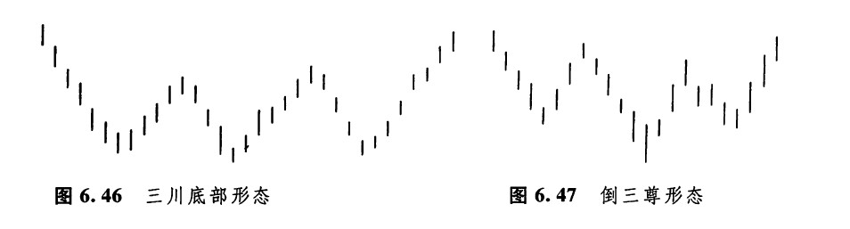
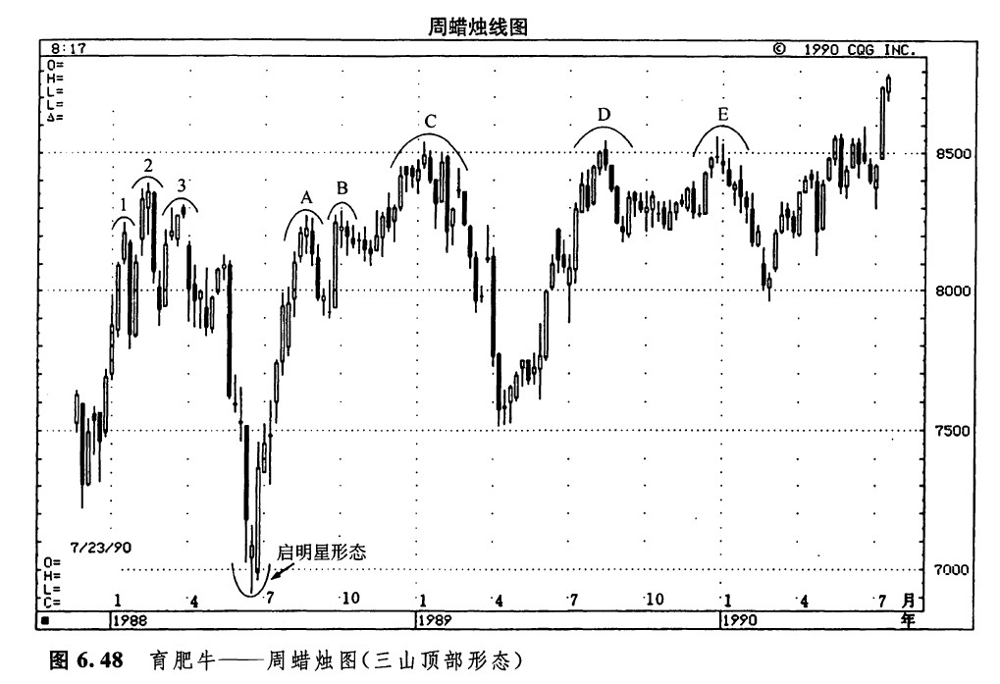
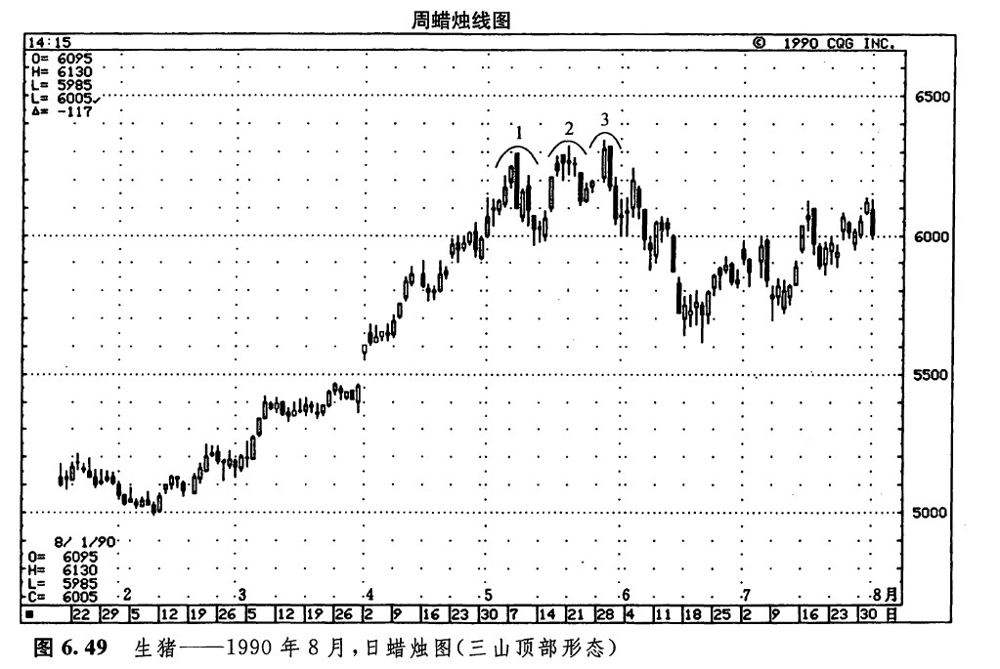
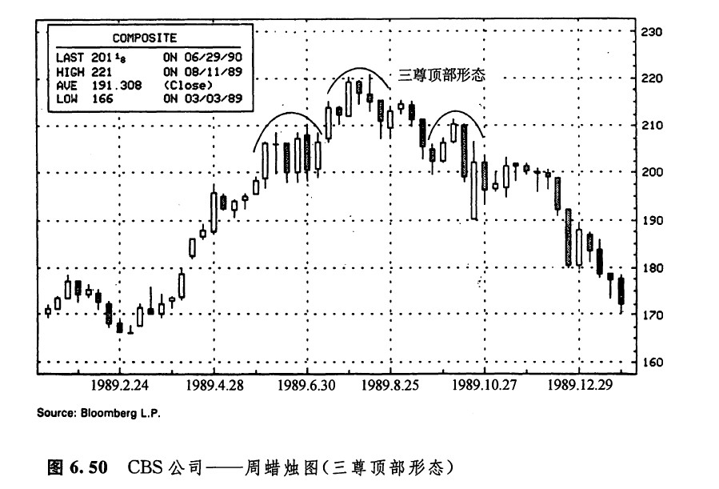
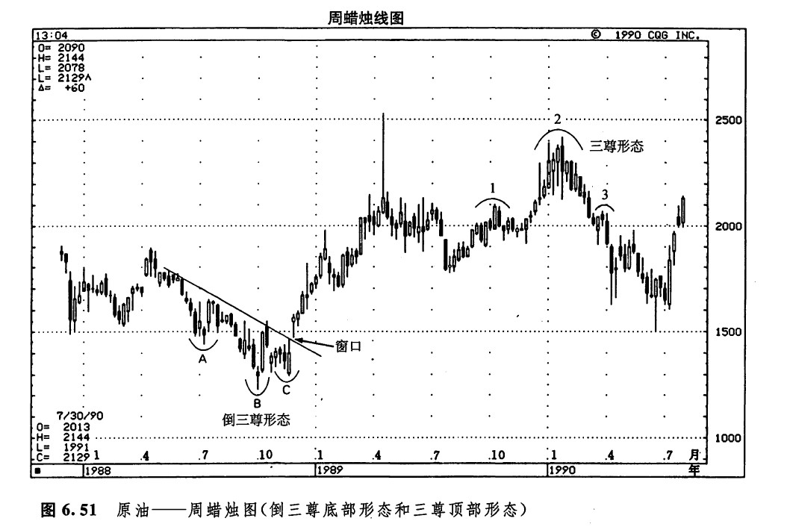
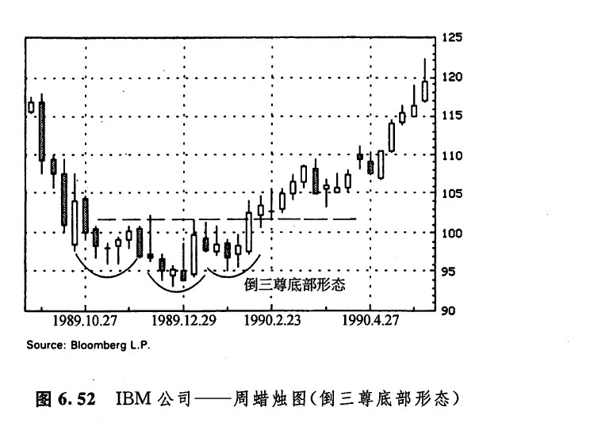

三山形态和三川形态
在蜡烛图技术中，还有一些较长期的顶部反转形态和底部反转形态，其中包括三山形态、三川形态、三尊顶部形态、倒三尊底部形态、圆顶形态、平底锅形态（或者说，圆底形态），以及塔形顶部和塔形底部形态。与西方的三重顶形态相仿，日本也有所谓的三山顶部形态（如图6.44所示）。一般认为，本形态构成了一种主要顶部反转过程。如果市场先后三次均从同一个高价位上回落，或者市场对某一个高价位向上进行了三次尝试，但统统归于失败，那么，就形成了一个三山顶部形态。在三山顶部形态的最后一座山的最高点，还应当出现某种看跌的蜡烛图指标（比如说，一根十字线，或者一个乌云盖顶形态等），以对三山顶部形态作出确认。
在三山顶部形态中，如果中间的山峰高于两侧的山峰，则构成了一种特殊的三山形态，称为三尊顶部形态（如图6.45所示）。采用这个名字的原因是，在佛教寺庙的大殿里，中间供奉着释伽牟尼，他的塑像最高大，两边是他的弟子，他们的塑像比较小。这种形态与这群佛像颇为相像。这个形态与头肩形形态对应得非常完美。不过，虽然三尊顶部形态与头肩形是对等的技术信号，但是，日本人应用三尊形态理论的历史，比美国人应用头肩形形态早了100余年（据我们所知，在美国，最早提及头肩形的是理查德·夏巴克，时间在本世纪30年代。熟悉爱德华和迈吉的经曲著作《股市趋势的技术分析》的朋友都知道，该书的很多材料是以夏巴克的工作为基础的。夏氏是爱德华的岳父。）有意思的是，西方的市场观察家与东方的技术分析先驱，在这种价格形态上殊途同归了。环绕整个地球，市场心理都是共通的。借用一句日本的格言来形容，“小鸟的叫声，到哪儿都一样。”

三川底部形态（如图6.46所示）恰巧是三山顶部形态的反面。在市场先后三度向下试探某个底部水平后，就形成了这类形态。市场必须向上突破这个底部形态内的最高水平，才能证实底部过程已经完成。与西方的头肩形底部形态（也称为倒头肩形）对等的蜡烛图形态是变体三川底部形态，或者称为倒三尊形态（如图6.47所示）。

图6.48是一张难得一见的图例，其中包括了三山顶部形态的各种实际演化过程。下面我们来逐一讨论：

1.区域1、2、3构成了一个三尊形态，因为中间的山峰在三座山中是最高的。在第三座山的最高处，是一根黄昏星蜡烛线。由这个三山形态引发的抛售行情终止于6月的启明星形态。
2.市场在A、B、C三处形成了三个山峰。有些日本技术分析师认为，这三座峰是市场向新高水平迈进的三次尝试，就像向上涌起的三阵披畴。第三浪的上涌过程，理当形成一个最高潮（这正是本例的情况）。市场先后三次向上推进到新高水平，三次都未能扩大战果。当第三次上推失败后，牛方终于投降。请注意，第三座山（C）的最高处是一颗黄昏星。
3.有的日本技术分析师把三山形态理解成市场的三个阶段的上涨过程，也有的把三山形态理解为市场对同一个价格高峰的三次试探。区域C、D、E处组成了一个三山形态，这里的情况符合后一种解释。在区域D，市场通过一个乌云盖项形态发出了顶部信号；在区域E的最高处，市场的顶部信号是一根上吊线，还有紧随其后的一根十字线。
在如图6.49所示的三山形态中，在每座山峰处都显示出了看跌的蜡烛图证据。在区域1，有一个看跌吞没形态；在区域2，先是一根上吊线，后面跟着二根十字线；在区域3，又是一个看跌吞没形态。如图6.50所示，在这个三山形态中，因为中间的山峰是最高的，所以，本形态就成了一个三尊形态。在最高的中间山峰的顶部，有一根黑色实体藏身于前一根白色实体之内，形成了一个孕线形态。


如图6.51所示，1988年出现了一个倒三尊形态（即，倒头肩形）。在这个倒三尊形态的三个底部A、B、C处，每个底部都包含一个看涨的蜡烛图信号。在低谷A处，有一根锤子线。在低谷B处，又是一根锤子线，而且这根锤子线还是图示启明星形态的一个组成部分（由该启明星形态引发的上涨行情收场于一个乌云盖顶形态）。在低谷C处，出现了一个斩回蜡烛线形态（它几乎也构成了一个看涨吞没形态）。后来，一旦牛方向上跳空，突破了图示的向下倾斜的阻挡线，市场趋势就转而向上了。日本技术分析师将价格跳空称为窗口（下一章，我们讨论持续形态，还将详细研究窗口的情况）。因为这里用上了价格跳空的概念，所以您需要了解，根据日本分析师的看法，价格跳空（即窗口）属于持续性形态。因此，向上跳空是看涨的，向下跳空是看跌的。在本例中，这个向上跳空具备看涨的意味。从1989年第三季度，到1990年第一季度，本图所示的价格活动演变成了一个三尊顶部形态。

在三川底部形态中（当然也包括下面这个实例），为了提供买入信号，市场必须以一根白色蜡烛线的形式，收市于本形态的最高点之上（如图6.52所示）。在这个实例中，市场必须向上超越大约102美元的价格水平。请注意102美元的水平如何在3月里的抛售行情中转化为支撑水平的。

下一篇：数字3在蜡烛图技术中的重要性
上一篇：反击线形态（约会线形态）